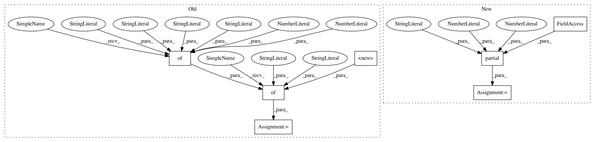

1fb3e6033603434a13505b745794bb7eb331fd20,arch/example.py,CNN,__init__,#CNN#,36
Before Change
]
from se3_cnn import basis_kernels
radial_window_dict = {
"radial_window_fct": basis_kernels.gaussian_window_fct_convenience_wrapper,
"radial_window_fct_kwargs": {
"mode": "compromise",
"border_dist": 0.,
"sigma": .6
}
}
common_block_params = {
"size": 5,
"stride": 2,
"padding": 3,
After Change
from se3_cnn import basis_kernels
from functools import partial
radial_window = partial(basis_kernels.gaussian_window_fct_convenience_wrapper,
mode="compromise", border_dist=0, sigma=0.6)
common_block_params = {
"size": 5,
"stride": 2,
In pattern: SUPERPATTERN
Frequency: 3
Non-data size: 7
Instances
Project Name: mariogeiger/se3cnn
Commit Name: 1fb3e6033603434a13505b745794bb7eb331fd20
Time: 2018-04-04
Author: geiger.mario@gmail.com
File Name: arch/example.py
Class Name: CNN
Method Name: __init__
Project Name: mariogeiger/se3cnn
Commit Name: 1fb3e6033603434a13505b745794bb7eb331fd20
Time: 2018-04-04
Author: geiger.mario@gmail.com
File Name: arch/example.py
Class Name: CNN
Method Name: __init__
Project Name: mariogeiger/se3cnn
Commit Name: 1fb3e6033603434a13505b745794bb7eb331fd20
Time: 2018-04-04
Author: geiger.mario@gmail.com
File Name: se3_cnn/batchnorm.py
Class Name:
Method Name: test_bn_conv
Project Name: mariogeiger/se3cnn
Commit Name: 1fb3e6033603434a13505b745794bb7eb331fd20
Time: 2018-04-04
Author: geiger.mario@gmail.com
File Name: arch/miccai12.py
Class Name: Model
Method Name: __init__